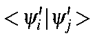
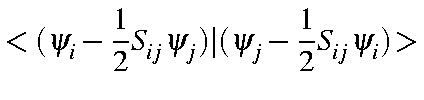
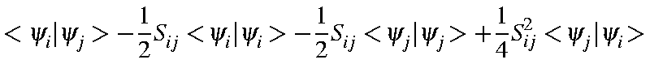
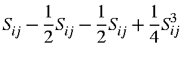

Re-orthogonalizing consists of taking pairs of LMOs, yi and yj, and forming linear combinations such that the overlap (<yi|yj>) is zero. The LMOs involved form the full set, that is, both occupied plus virtual sets are used.
The two LMOs can be regarded as unit vectors that are almost at 90 to
each other. Let the difference from 90
to
each other. Let the difference from 90 be a.
If the vectors
are each rotated by -1/2a,
then they will become perfectly
orthogonal. This operation is most conveniently performed using perturbation
theory. Let:
be a.
If the vectors
are each rotated by -1/2a,
then they will become perfectly
orthogonal. This operation is most conveniently performed using perturbation
theory. Let:
That the new LMOs are orthogonal can readily be demonstrated:
| $"> | = | $"> |
| = | -\frac{1}{2}S_{ij}<\!\psi_i\vert\psi_i>- \frac{1}{2}S_{ij}<\!\psi_j\vert\psi_j\!>+\frac{1}{4}S_{ij}^2<\!\psi_j\vert\psi_i\!>$"> | |
| = |  | |
| = | 0 |
The calculation of the overlaps, Sij, is most conveniently done for one
LMO, fi,
with all other LMOs. Because of this, fi
should not be
modified while the re-orthogonalization is done. In order to avoid modifying
fi,
the rotation is changed so that fi
remains stationary and all
the rotation is incurred by fj,
thus:
Before the re-orthogonalization, the LMOs are almost orthogonal, and the use of perturbation theory here is fully justified.